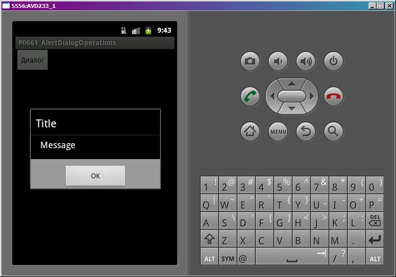

В этом уроке:
- рассматриваем обработчики событий диалога
- программно закрываем и показываем диалог
Мы закрываем диалог нажатием на кнопку, на пункт списка или кнопкой Назад. Давайте рассмотрим, какие есть программные способы закрытия. Также узнаем, какие обработчики диалога можно использовать, чтобы отследить закрытие.
Создадим проект:
Project name: P0661_AlertDialogOperations
Build Target: Android 4.0
Application name: AlertDialogOperations
Package name: ru.startandroid.develop.p0661alertdialogoperations
Create Activity: MainActivity
В strings.xml пропишем тексты:
<?xml version="1.0" encoding="utf-8"?>
<resources>
<string name="dialog">Диалог</string>
<string name="app_name">P0661_AlertDialogOperations</string>
</resources>main.xml:
<?xml version="1.0" encoding="utf-8"?>
<LinearLayout
xmlns:android="http://schemas.android.com/apk/res/android"
android:layout_width="fill_parent"
android:layout_height="fill_parent"
android:orientation="vertical">
<Button
android:id="@+id/button1"
android:layout_width="wrap_content"
android:layout_height="wrap_content"
android:text="@string/dialog"
android:onClick="onclick">
</Button>
</LinearLayout>MainActivity.java:
package ru.startandroid.develop.p0661alertdialogoperations;
import android.app.Activity;
import android.app.AlertDialog;
import android.app.Dialog;
import android.content.DialogInterface;
import android.content.DialogInterface.OnCancelListener;
import android.content.DialogInterface.OnDismissListener;
import android.content.DialogInterface.OnShowListener;
import android.os.Bundle;
import android.os.Handler;
import android.util.Log;
import android.view.View;
public class MainActivity extends Activity {
final String LOG_TAG = "myLogs";
final int DIALOG = 1;
Dialog dialog;
/** Called when the activity is first created. */
public void onCreate(Bundle savedInstanceState) {
super.onCreate(savedInstanceState);
setContentView(R.layout.main);
}
@Override
protected Dialog onCreateDialog(int id) {
if (id == DIALOG) {
Log.d(LOG_TAG, "Create");
AlertDialog.Builder adb = new AlertDialog.Builder(this);
adb.setTitle("Title");
adb.setMessage("Message");
adb.setPositiveButton("OK", null);
dialog = adb.create();
// обработчик отображения
dialog.setOnShowListener(new OnShowListener() {
public void onShow(DialogInterface dialog) {
Log.d(LOG_TAG, "Show");
}
});
// обработчик отмены
dialog.setOnCancelListener(new OnCancelListener() {
public void onCancel(DialogInterface dialog) {
Log.d(LOG_TAG, "Cancel");
}
});
// обработчик закрытия
dialog.setOnDismissListener(new OnDismissListener() {
public void onDismiss(DialogInterface dialog) {
Log.d(LOG_TAG, "Dismiss");
}
});
return dialog;
}
return super.onCreateDialog(id);
}
public void onclick(View v) {
showDialog(DIALOG);
}
}Код в основном должен быть понятен по прошлым урокам. Создаем диалог, настраиваем заголовок, сообщение и одну кнопку без обработчика (нам он сейчас не нужен). Далее для диалога указываем три обработчика: отображения, отмены и закрытия диалога. Все они пишут о себе в лог.
onclick – обработчик кнопки из main.xml. Здесь мы просто запускаем диалог.
Обработчики
Давайте смотреть, когда и какие обработчики событий диалога будут срабатывать. Все сохраним и запустим. Жмем кнопку Диалог, появляется диалог.

В логе видим:
Create
Show
Диалог создался и сработал обработчик отображения диалога. Нажмем кнопку ОК. Диалог закрылся, а лог показал следующее:
Dismiss
Сработал обработчик закрытия диалога.
Теперь еще раз запустим диалог кнопкой Диалог. В логе видим:
Show
Метод onCreateDialog не отработал, т.к. диалог уже создан. Это мы подробно рассматривали в прошлых уроках. Сработал обработчик отображения.
Для закрытия диалога нажмем кнопку Back (Назад) на эмуляторе. В логе появились следующие строки:
Cancel
Dismiss
Перед обработчиком закрытия (Dismiss) сработал обработчик отмены (Cancel), т.к. диалог был отменен.
Операции
Разберем программные методы управления диалогом. Для этого немного изменим код MainActivity.java. Добавим два пустых пока метода method1 и method2, и перепишем onclick:
void method1() {
}
void method2() {
}
public void onclick(View v) {
showDialog(DIALOG);
Handler h = new Handler();
h.postDelayed(new Runnable() {
public void run() {
method1();
}
}, 2000);
h.postDelayed(new Runnable() {
public void run() {
method2();
}
}, 4000);
}Handler мы пока не проходили, его понимать необязательно. Сейчас просто надо принять, что вся эта конструкция в onclick покажет диалог, затем через 2 секунды выполнит метод method1 и еще через 2 секунды выполнит метод method2. Т.е. получится такая последовательность:
отображение диалога
2 сек
выполнение method1
2 сек
выполнение method2
Мы будем работать с method1 и method2. Начнем с метода dismiss – он закрывает диалог. Перепишем метод method1:
void method1() {
dialog.dismiss();
}method2 пока не трогаем. Запустим приложение и нажмем кнопку Диалог. Диалог появился, повисел две секунды и закрылся. Это нам обеспечил dismiss, вызванный через 2 секунды после отображения диалога. Смотрим лог:
Create
Show
Dismiss
Все верно. Диалог создался, отобразился и закрылся. Обратите внимание на время записей в логе. Между Show и Dismiss должно быть примерно 2 секунды.
Теперь используем метод cancel. Перепишем method1:
void method1() {
dialog.cancel();
}Все сохраним, запустим приложение и вызовем диалог. Снова диалог появился и закрылся через две секунды. Сработал метод cancel. Логи:
Create
Show
Cancel
Dismiss
Все так же, как при закрытии диалога кнопкой Back.
Снова перепишем method1, используя метод hide:
void method1() {
dialog.hide();
}Запустим приложение, вызовем диалог. Он отобразился и закрылся. Смотрим лог:
Create
Show
На этот раз обработчик закрытия не сработал. Диалог просто скрылся. Зачем это нужно, я не знаю, но метод такой есть, поэтому я рассказал о нем.
Управление из Activity
Мы работали напрямую с объектом Dialog и вызывали его методы. Есть еще другой способ. Сначала немного теории о механизме взаимодействия Activity и диалога. Когда мы первый выполняем метод showDialog, мы передаем туда ID. Это ID далее передается в onCreateDialog. В итоге onCreateDialog возвращает созданный диалог, и Activity для себя увязывает его с ID. И если мы захотим обратиться к этому диалогу, нам нужен будет только ID, Activity сама по нему определит, какой диалог нам нужен.
Когда мы, например, следующие разы вызываем showDialog, мы передаем туда ID, но диалог не создается. Activity по ID находит ранее созданный диалог и показывает его. У Activity также есть методы по закрытию диалога – это dismissDialog и removeDialog. Первый просто закрывает диалог, а второй закрывает и заставляет Activity забыть про него. Т.е. когда мы в след.раз захотим показать этот диалог, Activity будет заново создавать его, а не брать уже готовый. Проверим это.
Перепишем методы:
void method1() {
dismissDialog(DIALOG);
}
void method2() {
showDialog(DIALOG);
}Все сохраним и запустим. Вызовем диалог и ждем. Диалог отобразился, через 2 секунды закрылся, и еще через 2 снова открылся. Смотрим лог:
Create
Show
Dismiss
Show
Когда диалог отобразился второй раз, не сработал метод его создания, т.к. Activity использовало созданный при первом вызове объект.
Перепишем метод method1:
void method1() {
removeDialog(DIALOG);
}Будем не только закрывать диалог, но и «забывать» его. method2 оставляем без изменений, он будет показывать диалог.
Запустим приложение, запустим диалог и ждем. Диалог открылся, закрылся и открылся снова. Смотрим лог:
Create
Show
Dismiss
Create
Show
Но на этот раз при втором показе он снова создавался, т.к. Activity его забыло благодаря методу removeDialog.
У объекта Dialog есть еще метод show. Чем он отличается от метода Activity showDialog? show просто покажет созданный диалог, а showDialog, начинает проверять был ли уже создан диалог, создает его, если необходимо, и вызывает для него метод onPrepareDialog.